All images are rendered at 480×360 on a 10-core Apple Silicon machine using -t 10.
In this homework I built a physically based path tracer. A bounding volume hierarchy (BVH) makes those intersection queries logarithmic instead of linear in the number of primitives. On top of that, I implemented a Monte Carlo estimator of the rendering equation. It computes both direct and indirect lighting effects via simulation with a randomized death process for rays. Adaptive sampling was also implemented.
Some of my largest takeaways were in seeing how the distribution matters. Uniform hemisphere sampling and light sampling estimate the same integral, but at equal sample counts light sampling was dramatically cleaner. BVH's effect on speed was pretty astounding as well.
For every pixel, raytrace_pixel picks random points inside the pixel and normalizes them by the image
size. Camera::generate_ray maps these onto a sensor plane one unit in front of the pinhole, which (as
seen in lecture) spans \(\pm\tan(\frac{hFov}{2})\) horizontally and \(\pm\tan(\frac{vFov}{2})\) vertically:
\[ d_{cam} = \left( (2x-1)\tan\frac{hFov}{2},\ (2y-1)\tan\frac{vFov}{2},\ -1 \right). \]
This direction is rotated into world space and normalized, and the ray's \([t_{min}, t_{max}]\) is set to the near
and far clipping planes. The samples' radiance is averaged to get the pixel's color.
has_intersection just checks for any hit (all shadow rays need), while intersect also fills
in an Intersection with \(t\), the normal, the primitive, and its BSDF. A hit only counts if \(t\) is in
\([t_{min}, t_{max}]\), and after a valid hit I shrink \(t_{max}\) to \(t\) so only closer hits are accepted later.
For triangles, I used Möller–Trumbore. Setting the ray \(o + t d\) equal to the barycentric point \((1-b_1-b_2)p_1 + b_1 p_2 + b_2 p_3\) and solving with Cramer's rule gives \[ \begin{bmatrix} t \\ b_1 \\ b_2 \end{bmatrix} = \frac{1}{S_1 \cdot E_1} \begin{bmatrix} S_2 \cdot E_2 \\ S_1 \cdot S \\ S_2 \cdot d \end{bmatrix}, \] where \(E_1 = p_2 - p_1\), \(E_2 = p_3 - p_1\), \(S = o - p_1\), \(S_1 = d \times E_2\), and \(S_2 = S \times E_1\). A near-zero determinant means the ray is parallel to the triangle. Otherwise, the hit is valid when \(t\) is in range and \(b_1, b_2 \ge 0\), \(b_1 + b_2 \le 1\). The barycentrics are also reused to interpolate vertex normals.
Plugging the ray into \(|P - c|^2 = R^2\) gives a quadratic in \(t\). A negative discriminant is a miss. Otherwise, I take the smaller root if it's in range and the larger one if not (for rays starting inside). The normal is \((P - c)/R\).
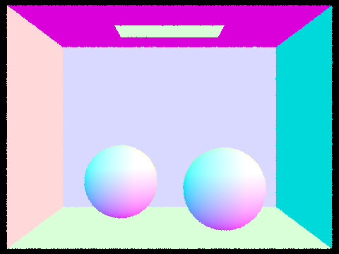 |
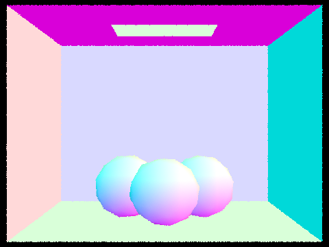 |
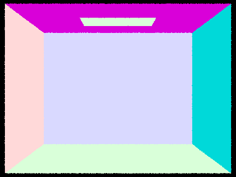 |
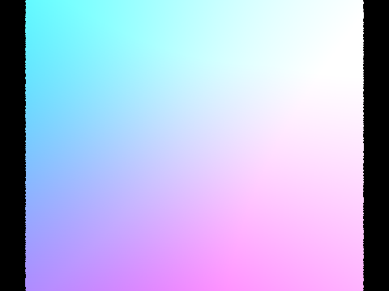 |
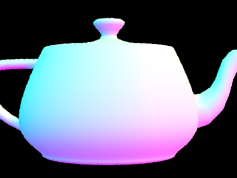 |
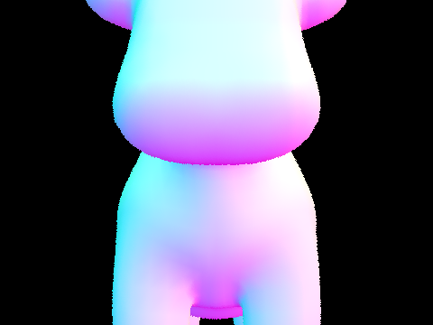 |
Normal shading of small scenes, 1 sample per pixel.
construct_bvh builds the tree recursively. For a range of primitives, I compute the bounding box of all
of them (the node's box) and the bounding box of just their centroids. If there are at most
max_leaf_size primitives, the node becomes a leaf. Otherwise, it gets split.
Split heuristic: I split at the midpoint of the longest axis of the centroid box using
std::partition. The centroid box avoids large triangles stretching the box along an axis where the
centroids are actually clustered. If every centroid lands on one side, I fall back to a median split with
std::nth_element so the recursion always terminates.
BBox::intersect uses the slab method from lecture: compute the entry and exit times for each axis, and
the ray hits the box if the three intervals and \([t_{min}, t_{max}]\) overlap.
Traversal returns right away if the node's box is missed, tests every primitive at a leaf, and otherwise recurses
into both children (the closest hit could be in either). The \(t_{max}\) shrinking from Part 1 prunes farther hits
for free, and has_intersection stops at the first hit.
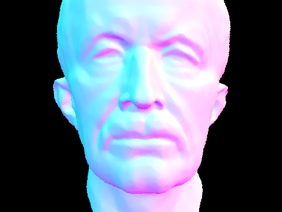 |
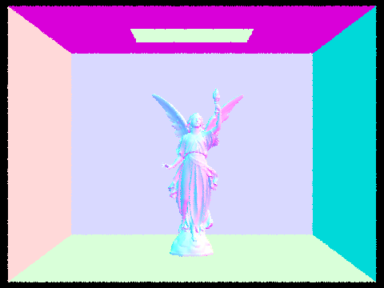 |
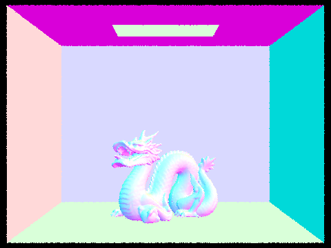 |
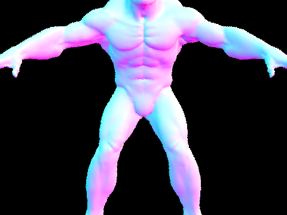 |
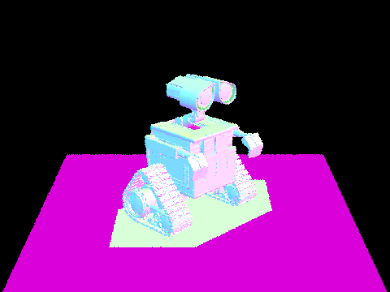 |
Normal shading of large meshes that need BVH acceleration, 1 sample per pixel.
For "without BVH," I set max_leaf_size to the number of primitives, which makes the root one big leaf
(a linear scan). Times are wall-clock for a 480×360, 1 spp normal-shading render, including scene loading.
| Scene | Primitives | Time without BVH | Time with BVH | Speedup | Avg. tests / ray without BVH | Avg. tests / ray with BVH |
|---|---|---|---|---|---|---|
| teapot.dae | 2,464 | 0.55 s | 0.059 s | 9× | 369.7 | 6.5 |
| cow.dae | 5,856 | 1.11 s | 0.082 s | 14× | 592.4 | 10.3 |
| beetle.dae | 7,558 | 1.62 s | 0.076 s | 21× | 778.9 | 5.3 |
| CBbunny.dae | 28,588 | 12.60 s | 0.128 s | 98× | 4,056.6 | 3.9 |
| maxplanck.dae | 50,801 | 13.39 s | 0.187 s | 72× | 6,646.6 | 5.9 |
Without a BVH, tests per ray grow linearly with scene size, into the thousands. With it, they stay around 4–10 regardless of size, since each ray only visits the few boxes it overlaps. So the speedup grows with complexity: 9× on the teapot and 70–100× on the larger meshes (and even more for tracing alone, since most of the BVH time is scene loading).
The diffuse BSDF is \(f = \rho / \pi\), which is constant in every direction and conserves energy. Both direct lighting functions compute the Monte Carlo estimate \[ L_{out}(p, \omega_o) \approx \frac{1}{N} \sum_{j=1}^{N} \frac{f(\omega_j \to \omega_o)\, L_i(p, \omega_j)\, \cos\theta_j}{p(\omega_j)} \] in the hit point's local frame (so \(\cos\theta_j = \omega_j.z\)). They only differ in how \(\omega_j\) is chosen.
Uniform hemisphere sampling: I take num_lights × ns_area_light uniform hemisphere
directions (pdf \(1/2\pi\)) and cast a ray for each, offset by a small epsilon. If it hits something emissive, that
emission is \(L_i\); otherwise the sample is zero.
Importance sampling the lights: For each light, sample_L gives a direction, distance, radiance,
and pdf (for area lights, converted to solid angle as \(\frac{r^2}{A\cos\theta_{light}}\)). Point lights are sampled
once and area lights ns_area_light times. Samples behind the surface are skipped, and the rest only count
if a shadow ray to the light is unblocked.
zero_bounce_radiance just returns the surface's own emission, and one_bounce_radiance calls
one of the two estimators above depending on the -H flag.
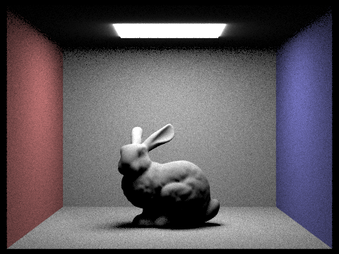 |
|
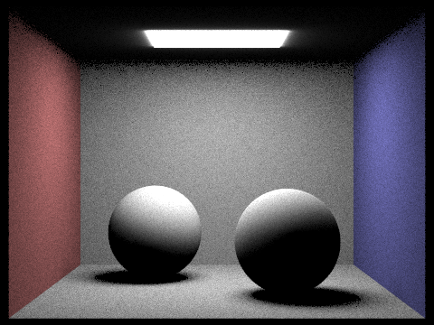 |
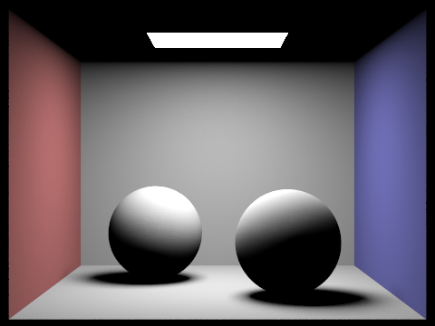 |
Direct illumination only: -s 64 -l 32 -m 1.
-l 1) |
-l 4) |
-l 16) |
-l 64) |
CBbunny.dae, light sampling, 1 sample per pixel (-s 1 -m 1).
With one light ray, each point either sees one random spot on the light or doesn't, so the shadow is a speckle of lit and unlit pixels. More light rays estimate how much of the light is visible, turning the penumbra into a smooth gradient. By 64 rays, the soft shadow is pretty much clean even at 1 spp.
Light sampling is way less noisy. The light only covers a small solid angle, so uniform directions rarely hit it, and the few that do get huge weights, which creates heavy salt-and-pepper grain. Light sampling only aims at the light, so nearly every sample counts. It also handles point lights, which hemisphere sampling can never hit.
It was also faster (7.7 s vs. 23.0 s for CBbunny), since shadow rays can stop early. The hemisphere images also lack the glow around the light, since they only see its emission through the surfaces they happen to hit.
at_least_one_bounce_radiance computes all the light that has bounced at least once before reaching the
camera. Each camera ray starts with depth = max_ray_depth, and every bounce decrements it. The procedure
at each hit point:
one_bounce_radiance. If isAccumBounces is on, add it to the result. If the depth is 1, return (the running total if accumulating, or just this bounce otherwise).sample_f (cosine-weighted for diffuse surfaces) to get \(f\) and the pdf, and cast a ray in that direction with the depth reduced by one.at_least_one_bounce_radiance there and add \(\frac{f \cdot L_i \cdot \cos\theta}{\text{pdf} \cdot p}\).
Dividing by \(p\) keeps things unbiased by weighting up the surviving paths.
est_radiance_global_illumination adds zero-bounce emission when accumulating, and otherwise only when
max_ray_depth = 0, so that exactly the \(m\)-th bounce is shown.
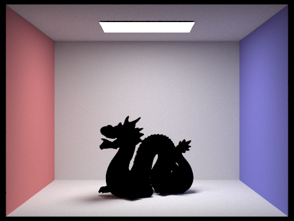 |
Global illumination: -s 1024 -l 4 -m 5.
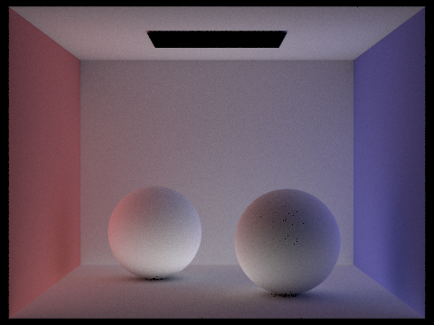 |
CBspheres_lambertian.dae, -s 1024 -l 4 -m 5.
For indirect-only, I skipped the zero-bounce emission and the direct term on the first bounce. The direct image has black shadows and a black ceiling, while the indirect image is the opposite: the ceiling and shadows are lit by light bouncing off the walls, with red and blue color bleeding. (The few dark specks on the right sphere come from floating point self-intersections and average out in the full render.)
isAccumBounces = false)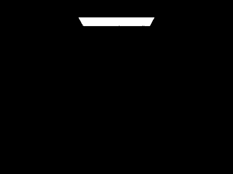 -m 0) |
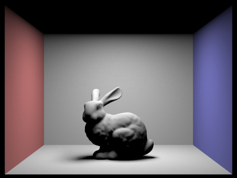 -m 1) |
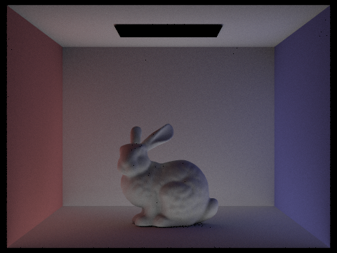 -m 2) |
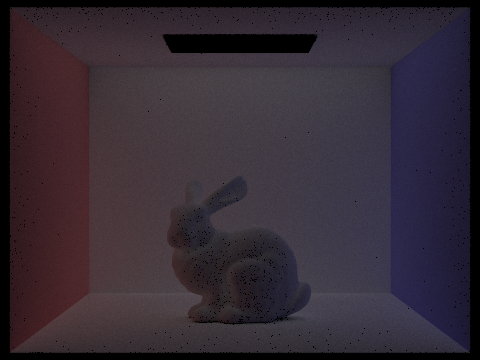 -m 3) |
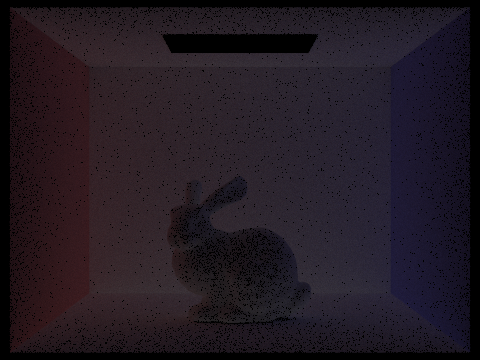 -m 4) |
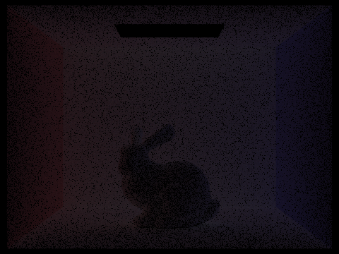 -m 5) |
CBbunny.dae, only the \(m\)-th bounce of light, -s 1024 -l 4 -o 0.
The 0th bounce is just the light, and the 1st is direct lighting with hard shadows. The 2nd bounce lights the ceiling, the bunny's underside, and the floor shadow, and carries the wall colors onto the bunny. The 3rd bounce is dimmer and more uniform, since each bounce multiplies by an albedo below 1 and spreads light out.
How do the 2nd and 3rd bounces compare to rasterization? A rasterizer only computes the 1st bounce and fakes the rest with a constant ambient term. Bounces 2 and 3 add real indirect light (color bleeding, lit ceilings, softer shadows), which makes the scene look physically plausible instead of flat.
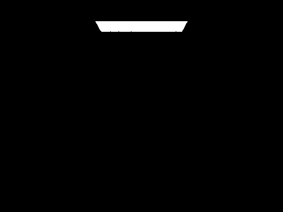 -m 0 |
-m 1 |
-m 2 |
-m 3 |
-m 4 |
-m 5 |
CBbunny.dae, all bounces up to max_ray_depth, -s 1024 -l 4 -o 1.
Each accumulated image is the sum of bounces 0 through \(m\). The jump from \(m=1\) to \(m=2\) is the biggest, since that's when the ceiling and shadows fill in, and by \(m=4\) and \(m=5\) the images are almost identical.
-m 0 |
-m 1 |
-m 2 |
-m 3 |
-m 4 |
-m 100 |
CBbunny.dae with Russian roulette (continuation probability 0.65), -s 1024 -l 4.
Russian roulette is always on in my implementation, so \(m = 0\)–\(4\) match the renders above. At
-m 100, paths are limited by Russian roulette instead (only about 2.9 expected extra bounces), so the
image looks basically the same as \(m=5\) and took only 74 s vs. 63 s.
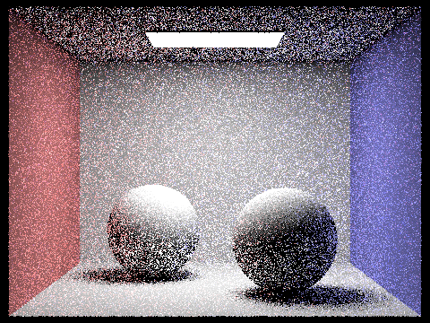 |
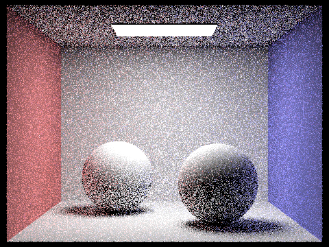 |
||
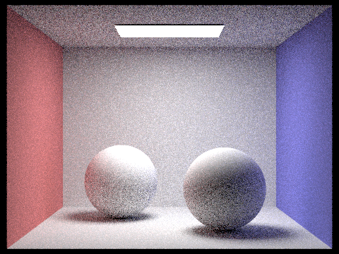 |
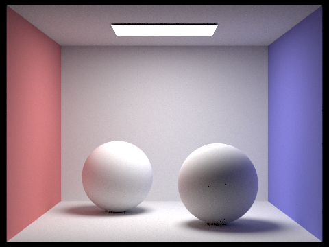 |
CBspheres_lambertian.dae, -l 4 -m 5.
At low sample counts the image is mostly noise, especially in indirectly lit areas like the ceiling. Since error falls as \(1/\sqrt{N}\), each 4× increase halves the noise. 64 spp is clear but grainy, and 1024 spp is essentially noise-free.
Directly lit walls converge after a few samples, while soft shadows and indirectly lit areas need many more. Adaptive sampling stops sampling a pixel once it's statistically good enough, so samples go where they're needed.
For each sample, I track the illuminance \(x_k\) and running sums \(s_1 = \sum x_k\), \(s_2 = \sum x_k^2\). Every
samplesPerBatch samples, I compute (as specified in the spec)
\[ \mu = \frac{s_1}{n}, \qquad \sigma^2 = \frac{1}{n-1}\left(s_2 - \frac{s_1^2}{n}\right), \qquad I = 1.96\,\frac{\sigma}{\sqrt{n}}, \]
and stop early if \(I \le \text{maxTolerance}\cdot\mu\). The sample count is saved to
sampleCountBuffer for the sample rate images.
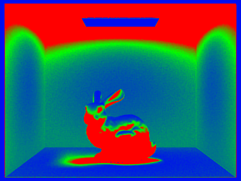 |
|
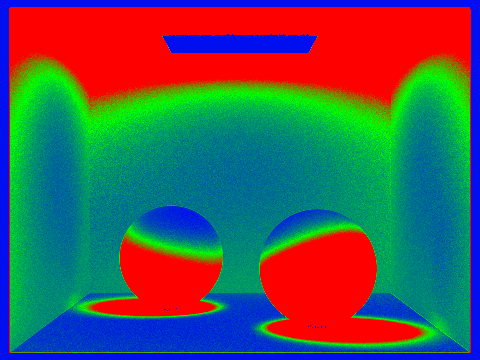 |
Adaptive sampling: -s 2048 -a 64 0.05 -l 1 -m 5. In the sample rate images, red means many samples and blue means few.
Directly lit areas like the floor and back wall converge early (blue), while the indirectly lit ceiling and contact shadows use the full budget (red). This also made CBbunny faster (44 s at up to 2048 spp vs. 51 s for a fixed 1024 spp) while staying noise-free.